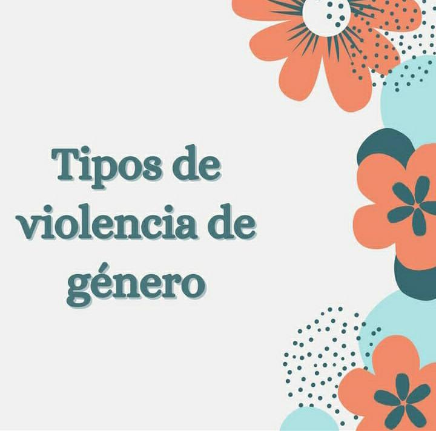
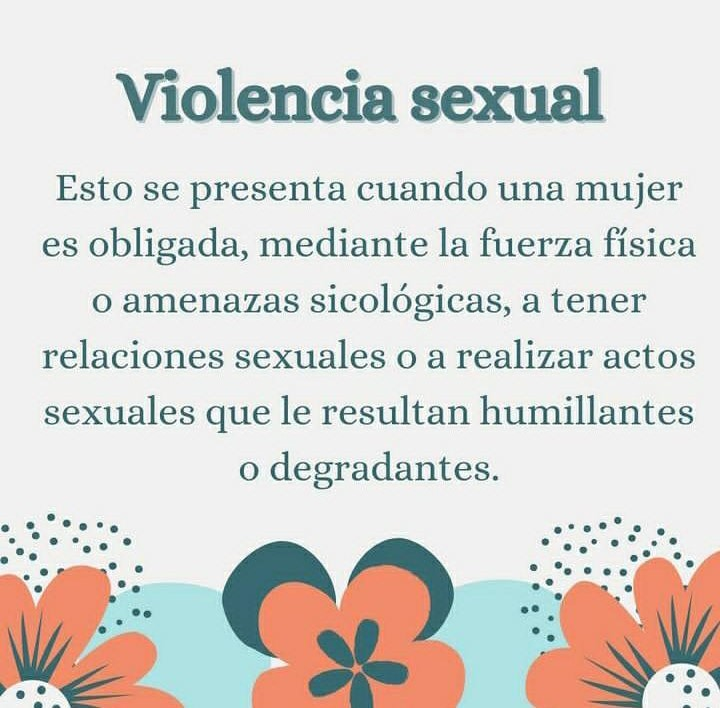
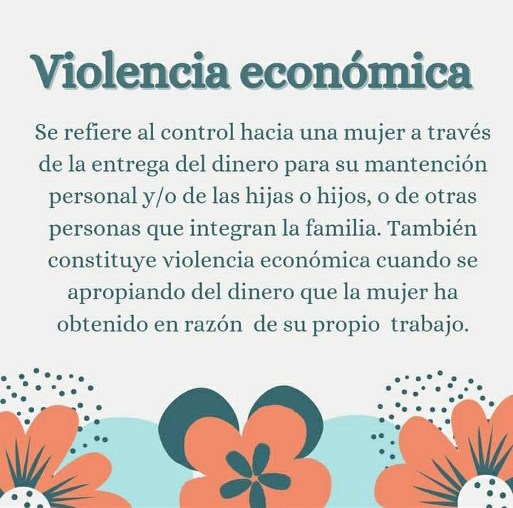
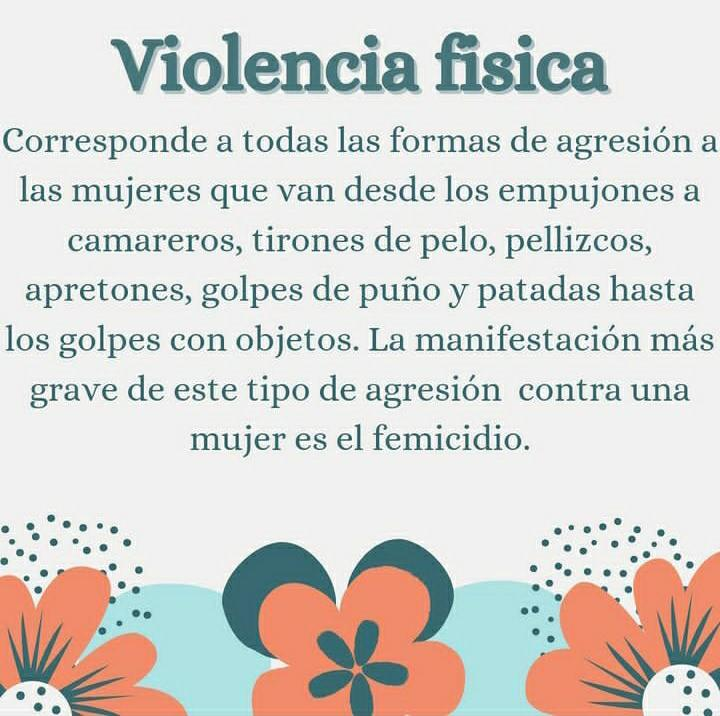
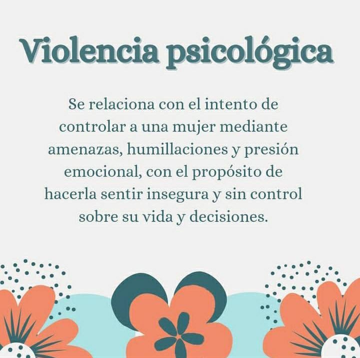

Violencia de Género y Violencia Doméstica
.jpg)
La violencia de género y la violencia doméstica son problemas graves que afectan a millones de personas en todo el mundo. Aquí encontrará información esencial para comprender estos problemas.
Los signos de violencia de género pueden variar, y es importante estar atento/a a posibles indicadores.
fundamental recordar que la violencia de género puede ser física, emocional, sexual o económica. Aquí hay algunos signos comunes:
Encuentre información sobre organizaciones de apoyo, líneas de ayuda y servicios que brindan asistencia a las víctimas de violencia de género.

Una historia inspiradora de supervivencia y resiliencia es la de Malala Yousafzai, aunque no ha sido una víctima de violencia de género doméstica en el sentido clásico, su historia refleja la lucha contra la violencia de género y la búsqueda de la educación para las mujeres.
Malala, nacida en Pakistán en 1997, se convirtió en una destacada defensora de los derechos de las niñas a recibir educación. A una edad temprana, el grupo extremista talibán tomó el control de su región y prohibió la educación para las niñas. A pesar de las amenazas y peligros, Malala continuó abogando por la educación de las niñas a través de un blog anónimo para la BBC urdu.
En octubre de 2012, cuando Malala tenía solo 15 años, fue atacada por un pistolero talibán mientras regresaba a casa en autobús después de la escuela. Malala sufrió graves heridas en la cabeza y el cuello. Su valentía y determinación la llevaron a recuperarse y a continuar su lucha por la educación.
Malala se ha convertido en un símbolo global de la resistencia y la lucha por los derechos de las mujeres. En 2014, se convirtió en la persona más joven en recibir el Premio Nobel de la Paz. Su historia destaca la importancia de desafiar la violencia de género y abogar por la igualdad de oportunidades, especialmente en el acceso a la educación.